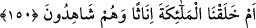
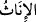
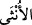
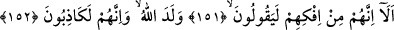
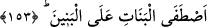

150. Yoksa biz melekleri onların gözü önünde kız olarak mı yarattık?
“Yoksa biz” yaratıkların en şereflilerinden olup cismani sıfatlardan ve tâbiat
rezilliklerinden uzak bulunan “melekleri onların gözü önünde” yani onlar o zaman
orada hazır idiler de “kız olarak mı yarattık?” da bu sözü söylüyorlar. Zira böyle
şeyler ancak müşâhedeyle bilinir. Sırf akıl yoluyla zorunlu olarak yahut istidlâlen
bilinmesine imkan yoktur. Çünkü dişilik meleklerin zatlarının gereği değil, bilakis harici
bir durumdur. Bu konuda bir nakli delil olmadığında şüphe yoktur. Bu nedenle
meleklerin kızlar olduğuna hükmetmek onların yaratılışı anında orada bulunmayı
gerektirir. Zira ilim, ya müşâhede ya akıl ya da istidlal yoluyla elde edilir. Öyleyse
görmedikleri halde melekleri nasıl “kızlar” olarak kabul etmişlerdir?
“
” kelimesi kitap vezninde olup “
” kelimesinin çoğuludur. Dişilik canlıların
sahip olduğu bayağı niteliklerdendir. Onların en düşük ve en bayağı olanına bile “sende
dişilik var” denilse kişi bunu söyleyene olan öfkesinden kendini parçalar. Buna göre
melekleri dişiler olarak kabul etmeleri meleklere ağır bir aşağılamadır. Sonra Allah
Teâlâ yeni bir hüküm ortaya koyarak şöyle buyurmaktadır:
151, 152. Dikkat edin, kesinlikle yalan uydurup söylüyorlar; «Allah doğurdu»
diyorlar. Onlar şüphesiz yalancıdırlar.
“Dikkat edin, kesinlikle” çok kötü bir “yalan uydurup söylüyorlar; «Allah
doğurdu» diyorlar.”
Yani onların bu fâsit ve bozuk görüşlerinin temeli, açık ve çirkin bir iftiradır. Bu
konuda hiçbir delil yahut şüpheleri dahi yoktur. “Veled” kelimesi, erkek-kız, az-çok
hepsine şâmildir. Burada Allah’a cismaniyet isnadında bulunuyorlar. Ve Allah Teâlâ’nın
yok oluşunu (fenâ) da mümkün görüyorlar. Çünkü doğum, oluşum ve bozulma kabul
eden cisimlere özeldir.
“Onlar şüphesiz” bu sözlerinde kuşku yoktur ki apaçık “yalancıdırlar.”
153. Allah, kızları oğullara tercih mi etmiş!
Yani “Allah,” hasis ve bayağı olana razı olarak bütün noksanlıklarına rağmen “kızları